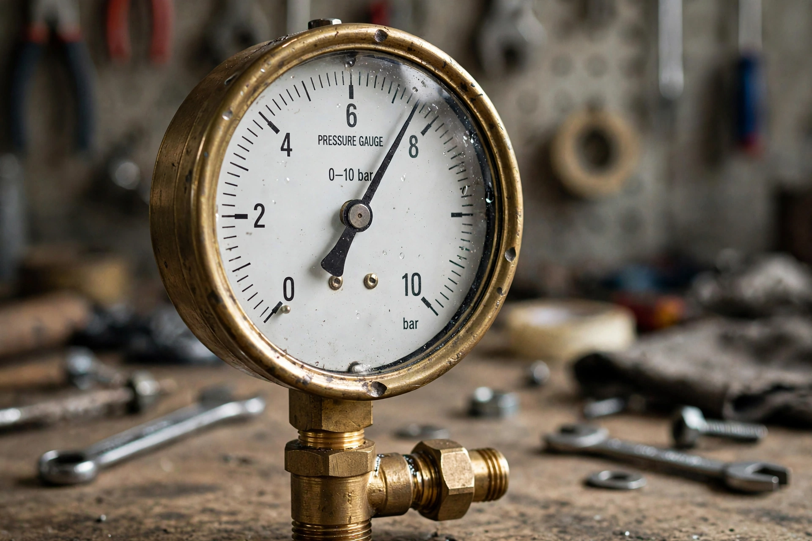

Bar (unit)

| Bar | |
|---|---|
| Unit of | Pressure |
| Symbol | bar |
| Named after | Greek baros ("weight") |
| Introduced by | Vilhelm Bjerknes (1909) |
| In SI units | 1 bar = 100,000 Pa exactly |
The bar is a metric unit of pressure defined as exactly 100,000 pascals (10⁵ Pa). It is close to, but slightly less than, average atmospheric pressure at sea level (1 atm = 1.01325 bar). The bar is not an SI unit, but it is accepted for use alongside SI in many contexts and remains in widespread practical use.
Definition and conversions
1 bar = 100 kPa = 0.1 MPa = 10⁶ dyn/cm² ≈ 0.987 atm ≈ 14.504 psi ≈ 750.06 mmHg (Torr). Multiples and submultiples in common use include the millibar (mbar = 100 Pa = 1 hPa), long used in meteorology for atmospheric pressure (modern weather reports increasingly use hectopascals, which are numerically identical), the kilobar in geology for crustal pressures, and the megabar in high-pressure physics.
Usage
The bar was introduced by the Norwegian meteorologist Vilhelm Bjerknes around 1909. It is used for tyre pressures in most of Europe, in scuba diving (cylinder pressures of 200–300 bar), espresso machine pump pressures ("9 bars"), hydraulic and pneumatic engineering, and oceanography (as the decibar, giving a rough 1 dbar ≈ 1 m depth correspondence). Usage notes: absolute pressure may be written bara, gauge pressure barg; the symbol is "bar" in both singular and plural.